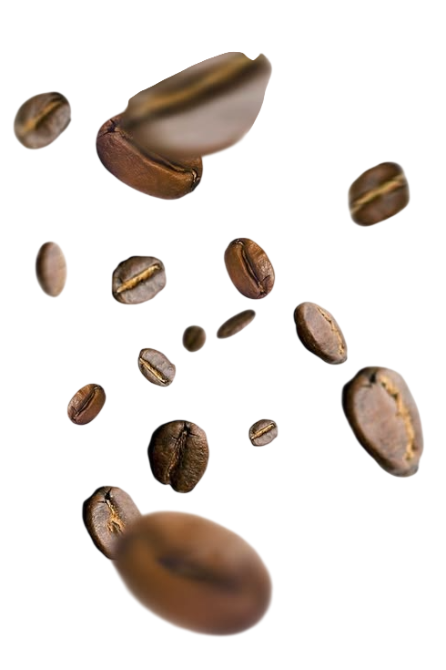
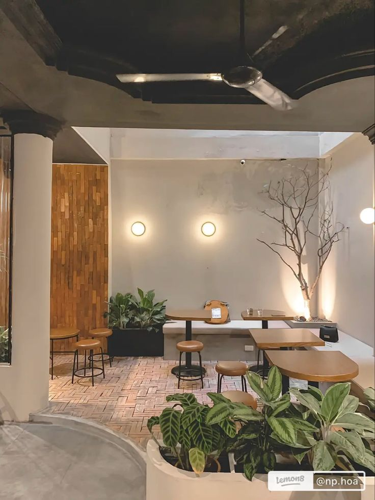

Raw Process
Kejujuran dalam setiap ekstraksi dan pilihan biji lokal.
.png)
"Menjadi diri sendiri tanpa harus selalu terlihat sempurna. Kopi jujur dengan karakter asli untuk menemani harimu."
Order Now
RAW COFFEE hadir dengan misi membawa karakter asli biji kopi lokal. Kami percaya keunikan setiap biji kopi tidak perlu disembunyikan. Didirikan di atas nilai kejujuran dan keberlanjutan, kami menghadirkan kopi raw-processed yang berkarakter tanpa sugar-coating.
SelengkapnyaKejujuran dalam setiap ekstraksi dan pilihan biji lokal.
Sudut terbuka yang sejuk untuk menikmati kopi di bawah udara bebas.

Suasana modern yang tenang untuk fokus berkarya atau sekadar bersantai.
Sentuhan presisi dan dedikasi barista dalam setiap cangkir yang disajikan.
RAW lahir dari satu keyakinan sederhana: kopi lokal nggak perlu dipoles berlebihan untuk jadi enak. Kami memilih biji langsung dari petani lokal, memprosesnya dengan jujur, lalu menyajikannya apa adanya.
Bekerja sama langsung dengan petani lokal supaya karakter tiap daerah tetap terjaga.
Proses sederhana tanpa sugar-coating. Rasa yang keluar adalah rasa asli bijinya.
Jujur ke pelanggan, ke petani, dan ke lingkungan.
Temukan RAW terdekat darimu
Jl. Industri No. 08, Jakarta
Setiap hari, 08:00 – 22:00
Lihat di MapsAlamat cabang kedua
Setiap hari, 08:00 – 22:00
Lihat di MapsAlamat cabang ketiga
Setiap hari, 08:00 – 22:00
Lihat di Maps